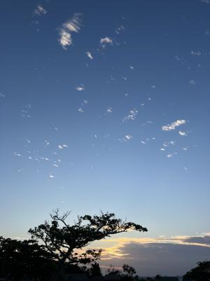
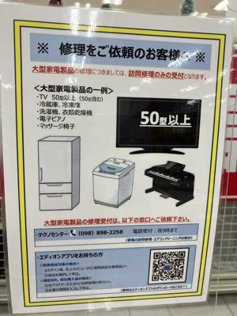

うるがいの話 ある日
最新: 修理受付を済ます【うるがいの話 ある日】とは 一日だけのプログです
『うるがいの話』の最新一日だけのプログで、通信料が少なく経済的だ。カニの画像をクリックすると全ての日付が載る『うるがいの話』サイトを表示します
|
|
【うるがいの話】 うるがい(ｳﾙｶﾞｲ urugai)とは、『もずくがに』の名前でとても大きくなります。 |
|---|---|
|
|
【カミマヤーの話】 猫のことを方言でマヤーといいます。カミマヤー（kamimayaa）とは、神の猫のことです。 |
|
【たながぁの音楽】 たながぁ（ﾀﾅｶﾞｰ tanagaa）とは手長えびのことで、何種類かあり大きいのは車 エビぐらいになります。 |

|
【ぶながぁの話】 ぶながぁ(ﾌﾞﾅｶﾞｰ bunagaa)とは、赤い髪の毛、赤い身体、そして身長は１ｍ２０ｃｍ ぐらい、川の蟹を食べているの目撃された。場所は沖縄県国頭郡大宜味村のと ある村僕の隣近所に住んでいる爺さんから、聞いた話です。 |
|
|
【ギーマの話】 ギーマ(giima)とは、山原の里山に咲くスズランに似た、 花を付けます。実は食べられます、 気が付くと口の周りが紫になっています。 |
2023年12月10日 (日）修理受付を済ます
15:49
 
９時５分に電化製品の修理受付けの窓口へ、４３インチの液晶テレビを持ち込
む。重い、重い！ぜ、昨日電話で受付け出来ますかと確認するときテレビのサ
イズを聞かれた。５０インチ以上は、だめってあった。なるほど、車の後部座
席にテレビを置いて、私が掴まえていたがギリギリだった。受付に３０分ほど
かかる、朝が早いので店員さん少なかった、私の受付に店員さんが張り付いた
ので支払いの担当者一人の箇所に、お客さんの列ができていた。修理は来年の
１月１６日が予定、長がーい。メインドイン チャイナ、品質悪いぜ！。先月
ＣＤラジオ（東芝）が、電源が入らないという初期不良で新品に交換してもら
ったが、１週間も経たないうちに同じ電源が入らないという状態が発生した。
メインドイン チャイナである。飽きれて、修理にだすのも止めた。しかし電
化製品は、殆どメインドイン チャイナである。夏日、いい天気半袖ですごし
ている、今年最後のお風呂場の大掃除をする。
１５時４３分 ビットコインの総資産 ￥１８、４３８（↓１５４）